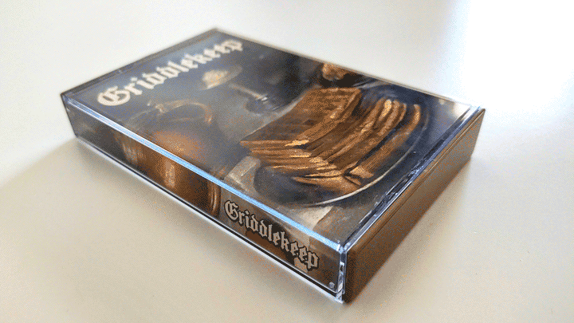
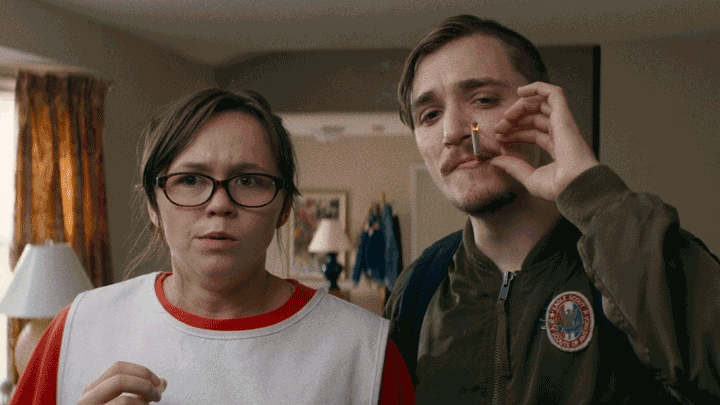
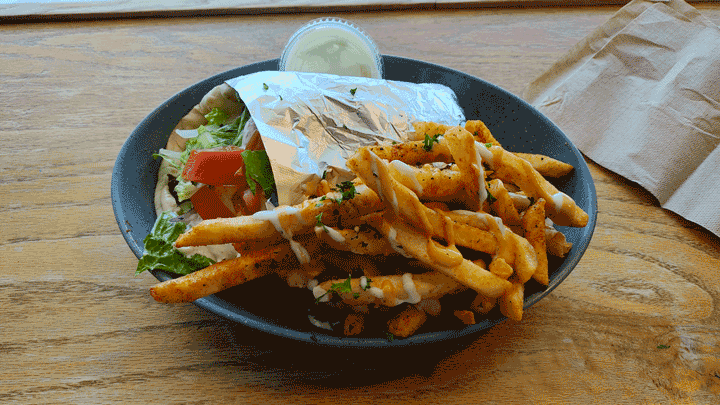

mattcolewilson.com → recent goings-on
mattcolewilson.com → recent goings-on
This is a page that highlights what I've been doing recently. It updates on occasion, so check back every now and then, if you'd like. This is the February 21, 2026 edition.
I’ve got a new music project called Griddlekeep releasing on February 27. It’s a 17-minute long, breakfast-themed comfy synth EP and it’s getting a cassette release via Fiadh Productions. I’m beyond stoked about this, as you might imagine. The cassette is gorgeous and I’m thrilled to be working with Fiadh on a little project like this. The music is pretty simple, but I think it accomplishes the vibe I was going for and the whole project has a nice, warm cohesion. I’m proud of it, is what I’m getting at. I also got the great Melt Knuckles to create some promo art, so stay tuned for that.

On the graphic design front, it’s almost Famicase season. Which is genuinely the best time of year when it comes to graphic design. I missed last year, but I’m back and have my entry ready to go. I also made a new page for all my Famicase stuff. There’s a blurred sneak peek of this year’s submission there, assuming I don’t decide to pivot at the last minute.
Also, I recently dropped a new font called MONOWIRE. This one came out of a three-year old Illustrator file that I would occasionally tinker with. (You can see a much earlier iteration of the idea on the Blacklist Famicase entry.) A good reason not to delete your old files, I guess. And also a nice reminder that it’s fun and good to keep riffing on stuff.
Finished playing Sons of the Forest and my opinion hasn’t changed very much. Quite a bit of jank, but overall fun gameplay and some cool vibes. Absolutely no idea what’s going on with the story though. We’re now playing Squirreled Away, which is a much more lighthearted affair. It’s a decent time and I think we’ll finish it during our next session.
I’m also a couple hours into Legend of Grimrock and am really liking it so far. I played a bit of the second one last year, but I think I prefer the more dungeon-focused setting of this game. I’m excited to get more into it once we finish Squirreled Away. I’m fascinated by the dungeon crawler genre and am hoping this will be sort of a gateway drug for me.
Alyson and I finished season two of the Fallout show. I think the first season was exciting because it didn’t suck. So entering season two with raised expectations made it feel a little more mediocre. The last couple of episodes were compelling though, and I think we’ll continue watching when the next season hits.

I haven’t been watching many movies this year. Looking at my Letterboxd and I’ve only watched two! The most recent one was Dinner in America, almost a month ago. Really liked it. Totally charmed. Just thinking about it makes me want to watch it again.
Rotating between Nine Inch Nails, Viagra Boys, Deftones, and Portishead. I also keep coming back to Hayden Pedigo (who I discovered through the Chat Pile collab). But nothing super new or surprising on the music front.
I do want to take this opportunity to shout out some podcasts, though. I’m a big fan of the folks at Duckfeed.tv, who are most famous for Bonfireside Chat, an entire podcast dedicated to Dark Souls and soulslikes. They have several shows about video games, including Watch Out for Fireballs, which is my personal favorite. And they also have a horror movies podcasts called Unfilmable and a Breaking Bad podcast called Best Quality Vacuum. Highly recommend all of it, if you need a new podcast to listen to (which is probably not true for anyone ever, tbh).
I’ve totally fallen off of The Fellowship of the Ring. I was enjoying it, but just put it down a while ago and haven’t picked it up. Just not in the mood to read, I guess. You know how it is. I’ll get back to it eventually.
I had this falafel sandwich combo twice this week and it’s been on my mind ever since. Look at those fries, man. Incredible stuff. Also, the world is still on fire, as I’m sure you know. Not sure what to say about it that hasn’t been said, but it’s been on my mind.

Also, the horrible, rotten, no-good conversation around generative AI continues to churn and I’m extremely tired of that and am hoping that the billionaires will someday soon decide they’ve wasted enough money and stop trying to force it into every aspect of our lives.
There’s even been some murmurs at work about wanting to make sure we’re using it to be maximally productive. I am the most vocal hater of any of my colleagues, but I'm not sure how much that matters. And I'm now having to think about where to draw the line and what happens if it is crossed. So, that's neat! For what it's worth, I’m still not convinced that the “hype” will necessarily continue and am holding out hope that the bubble will burst.
Adobe recently started offering a new plan that has fewer AI features, which was a pleasant surprise and maybe a tiny sign that the tide could be shifting. (And yeah, I am outing myself as an absolute fool that still gives Adobe a big chunk of money every month.)
But regardless of my undying hope, I’m also smart enough to prepare for disappointment, especially when it comes to the combination of creativity and commerce. This is probably the first time I’ve ever felt that the skillset I’ve spent the last decade and a half developing may someday soon be completely devalued by the powers that be. And that’s a huge bummer, ultimately.
Again, the future is unwritten and I’m not taking these evangelists at their word. I still have the belief that human creativity will remain valuable. And even if I end up needing to eventually find another career path, I’ll still keep making my silly little graphics in my free time. You can bet on that.
Someday I’ll write a whole spiel about my deep and pure hatred of generative AI and my complete disgust with the way the conversation has been hijacked and how so many of our brains have been broken. But it’s not going to happen right now, so I’ll leave it there. Instead I'm going to post this, turn off the computer, and celebrate Alyson's birthday with some friends. And hey, that's nice!
The FD Signifier video about Tyler Perry, this great Warlock Corpse performance, making time for video games, writing stuff down, hanging out with cats, looking at websites, having a website, and also that falafel sandwich combo I mentioned earlier.
Thanks for reading. Hope you have a nice day!
Back to top ⤴
Made by human labor. © 2026 All Rights Reserved